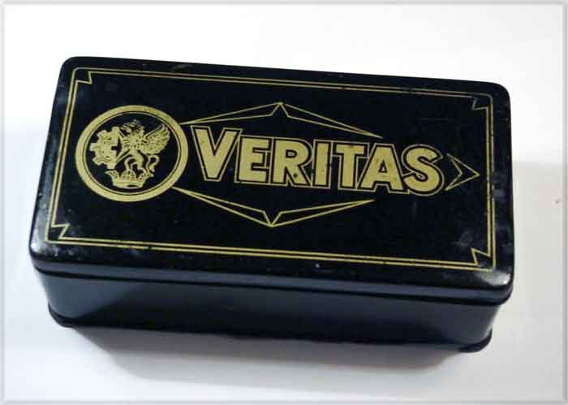

GERMAN ATTACHMENT TINS
Veritas by Clemens Müller
Dresden

© Alan Quinn 2003 All Rights Reserved
This page may not be reproduced or distributed in part or in whole without the prior written permission of the copyright owner